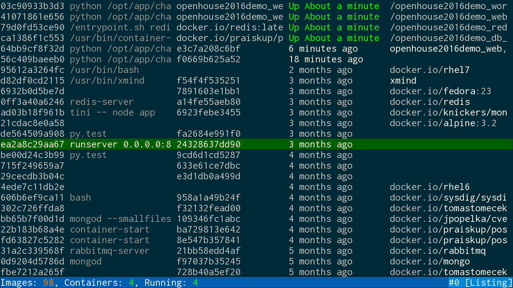
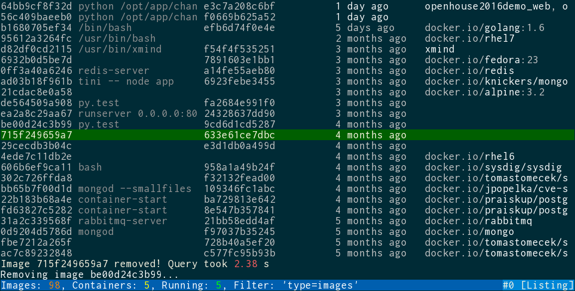

How do you manage your containers?
This is how I manage mine

Features
- Perform any operation on your containers and images
- Searching and filtering
- Dashboard-like view for containers and images
- Get logs real-time
- Verbose notifications: what happened and how long it took
- Real-time updates
- Layering
- vim keybinds!
- Runs in a docker container
Filtering & notifications

TODO
docker exec support- interaction with registry
- does my image have an update?
- Configuration
- Volumes, networks
- I don't know
Under the hood
- Python 3
- docker-py and urwid
- Multithreaded
Any contribution is very welcome
- Feedback
- Issues
- Pull requests
github.com/TomasTomecek/sen
Questions are welcome